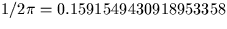
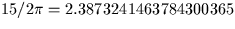

| STRING | C*(*) | string containing deg, arcmin, arcsec fields |
|---|---|---|
| NSTRT | I | pointer to start of decode (beginning of STRING = 1) |
| NSTRT | I | advanced past the decoded angle |
|---|---|---|
| DRESLT | D | angle in radians |
| JF | I | status: |
| 0 = OK | ||
| +1 = default, DRESLT unchanged (note 2) | ||
| -1 = bad degrees (note 3) | ||
| -2 = bad arcminutes (note 3) | ||
| -3 = bad arcseconds (note 3) |
| argument | before | after |
|---|---|---|
| STRING | '-57 17 44.806 12 34 56.7' |
unchanged |
| NSTRT | 1 | 16 (i.e. pointing to 12...) |
| RESLT | - | -1.00000D0 |
| JF | - |
| for STRING | to obtain | multiply DRESLT by |
|---|---|---|
| ' '' | radians | 1.0D0 |
| ' '' | turns | D0 |
| h m s | radians | 15.0D0 |
| h m s | days | D0 |
SLALIB --- Positional Astronomy Library